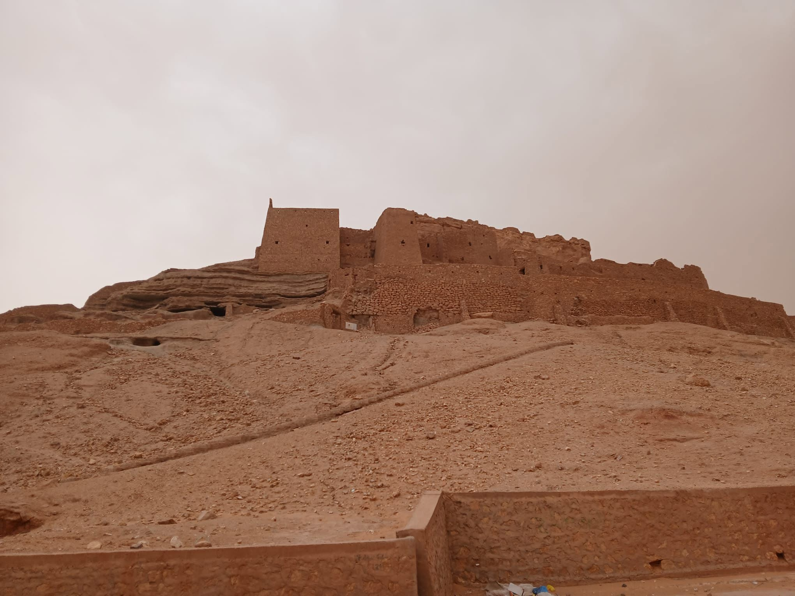

Les murmures de Tawrirt
Dans l’ombre ocre
du temps,
Le vieux ksar
d’El Goléa
respire encore
Comme un vieil homme
assis face au désert,
Les yeux plissés
de soleil
et de mémoire.
Tawrirt…
Ton nom roule
comme une pierre
chaude
Sous la langue du vent.
Et chaque ruelle étroite
Chuchote des secrets
de sable
et de silence.
Les murs,
fissurés
mais debout,
Portent la fatigue noble
des siècles.
Ils ont vu passer
des caravanes lentes,
Chargées de dattes,
d’épices
et de prières.
Ils ont entendu les appels
à l’aube,
S’élever comme une fumée
vers le ciel infini.
Ô ksar ancien,
Ton cœur bat encore
dans les portes closes.
Dans les ombres fraîches
où se cachent
Les rires oubliés
des enfants,
Et les voix graves
des anciens,
Racontant la pluie
comme un miracle.
Le désert t’enlace
sans te détruire.
Il t’efface doucement,
Comme on caresse
une cicatrice,
Avec respect,
avec lenteur.
Et moi,
passant d’un instant,
Je t’écoute sans bruit,
Car il faut du silence
Pour entendre vieillir
les pierres.
El Menia le 12 Avril 2026
Djamel Metref

← Tous les poèmes
Les murmures de Tawrirt
Carnets de voyages · Mémoire et transmission